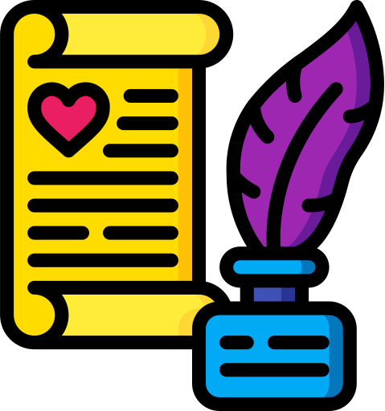
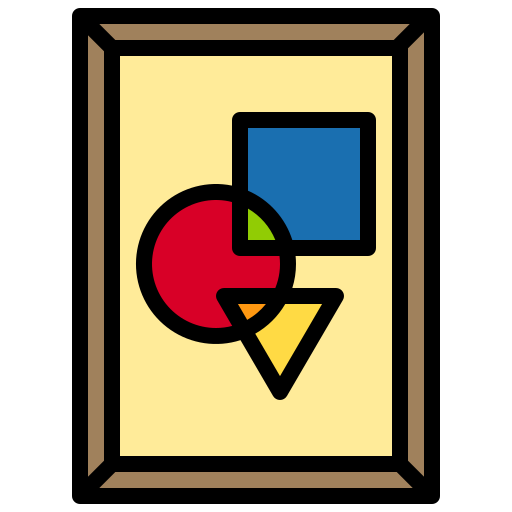
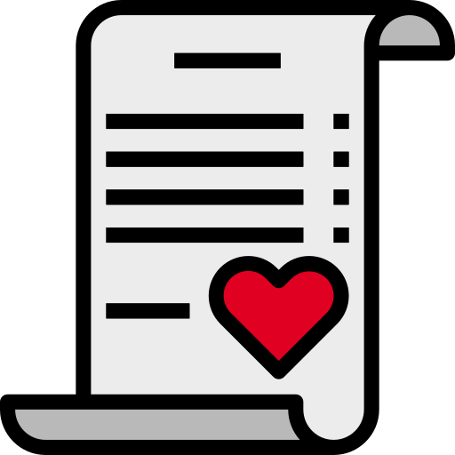
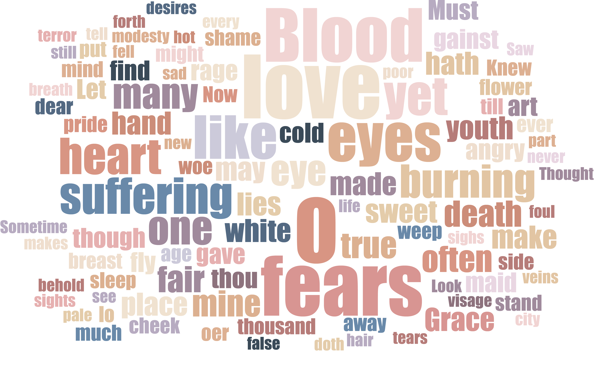

Can NLP-based sentiment analysis provide insights to poetry?
The goal of this project is to explore ways poetic sentiment can be interpreted computationally via NLP analysis, and if visualization can be used as a tool to help the readers deconstruct the poet’s choice of words behind their creation, or provide a new perspective for the poet on what they have written.
Continue scrolling for the poetry data exploration and visualization; if you are already familiar with the project, proceed to Poetry Analyzer and give it a try!
A Brief Introduction of Poetry
Poetry is one of the most subjective and expressive form of literature. It as a verbal art form predates written text, often greatly involved with emotions, history, culture, religion and personal expression.

~2000 B.C.
The first instance of Poetry appeared as early as the 20th century B.C.
~1300
Petrarca, for whom the Petrarchan sonnet is named, is perhaps one of the most famous early writers of the sonnet.
~1600
Following the reign of Queen Elizabeth I, the English Restoration period (from 1660-1689) saw the rise of literary elites, such as John Dryden.

~1900
Toward the turn of the 20th century as Whitman wrote “Of Modern Man I Sing”, ushered a new period—and a variety of forms—for poetry.
The first instance of Poetry appeared as early as the 20th century B.C.
~2000 B.C.
It became best known as an English poetic form through the work of William Shakespeare.
~1500
In the 19th-Century Poetry, some important poets to consider include key Romantic poets such as William Blake, Samuel Taylor Coleridge, William Wordsworth, and John Keats.
~1800

The 20th century also witnessed a number of poets winning the Nobel Prize, from the United States to India.
~1900
~Future
The development of poetry is ongoing.
In one form or another, poetry has been around for thousands years, but it always lived in a fluid state of development. Often the best poems are written from the heart, raw, emotional and to the point. Poem favors brevity, yet the best poems also capture a great amount of detail, making them incredibly powerful to their readers. However, this makes poetry often difficult to fully understand due to its unique literature structure.
Can we quantify expression in poetry through methods like extracting high frequency word, such as love, fears, suffering, burning, and death in Shakespeare's poetry, or do we need more insights such as NLP / Sentiment Analysis to be able to understand the intention behind the poets' careful creation?

A static word-cloud visualization generated from a collection of poetry from works of well known Romantic Poets illustrating common themes shared between 18th to 19th-centry poetry.
Where does Sentiment Analysis Fit in?
Sentiment analysis in Natural Language Processing (also known as opinion mining or emotion AI) is the use of NLP text analysi and computational linguistics to systematically extract, quantify, and identify affective states and subjective information in a text sample. The standard categories of classifications include valence, arousal, dominance, concreteness, etc.
The NRC Valence, Arousal, and Dominance (NRC-VAD) Lexicon
For this project, The NRC-VAD was used to analyze the sentiment of poetry. The NRC Valence, Arousal, and Dominance (VAD) Lexicon includes a list of more than 20,000 English words and their valence, arousal, and dominance scores. For a given word and a dimension (V/A/D), the scores range from 0 (lowest V/A/D) to 1 (highest V/A/D). The lexicon with its fine-grained real-valued scores was created by manual annotation using Best--Worst Scaling.
valence is the positive--negative or pleasure--displeasure dimension; arousal is the excited--calm or active--passive dimension; and dominance is the powerful--weak or 'have full control'--'have no control' dimension.
This is a 1000-word preview collection of the lexicon, ordered across the 0 - 1 spectrum. hover above the word nodes for more information and click on the different metrix to re-order. You can also click on the randomize button to look at a different set of words.
You may click on each sentiment attribute to explore the individual poems and their mapping; hover above the poem nodes for more information and click between the expanded sentiments to exit.
Has Poetry changed over time?
It is quite interesting to see that modern poetry seems to have more distinctive sentiment characteristics, yet the general recognized sentiment are always around the mid-range. From this, we can make some assumptions, like modern poetry may be more personalized than earlier (Renaissance) poetry with specific rhythmic guidelines, given things like increasing poetry written in the free verse format.
Is there any correlation between theme, context and sentiment?
We express different emotions when speaking and writing about specific subjects based on a combination of common definition and subjective experience. Does this apply to poetry as well? Below is a collection of 36 themes analyzed the Poetry foundation website database displayed in radar graph format. Each radar graph presents the min and max VAD scores of the poem classifier in each category.
You may click on each radar graph to explore the specific category of poetry and their VAD score; hover above the poem rings for more information.
Poetic Sentiment
As we have already looked at the average measured sentiment in poetry across different themes and time, let's look at exactly where these sentiments are found within poetry. This section explores the way different poets utilize words within the poetry, and how their choices affect the overall perceived sentiment in their work.
Display Poem Cluster
by
Select a category to filter poems by, and choose a poem to display its detailed analysis
Where does sentiment analysis for poetry leads to?
The classification of emotional states from poetry has not been receiving enough attention in the NLP world given its flexible connection to traditional grammatical structure. However, with the emotional analysis, we may be able to understand more regarding author's intent for expression through this method.
Given the poems subject matter, how do poems make you feel? Could it change the way you used to interpret poetry? Does this additional aspect of understanding give you a new perspective to poetry, or perhaps motivation to write and analyze your own?
I have created a draft Sentiment Analyzer that allows you to input text-drafts and build visualizations based on your creation. Cllick below to proceed to the AI Poetry Sentiment Analyzer.